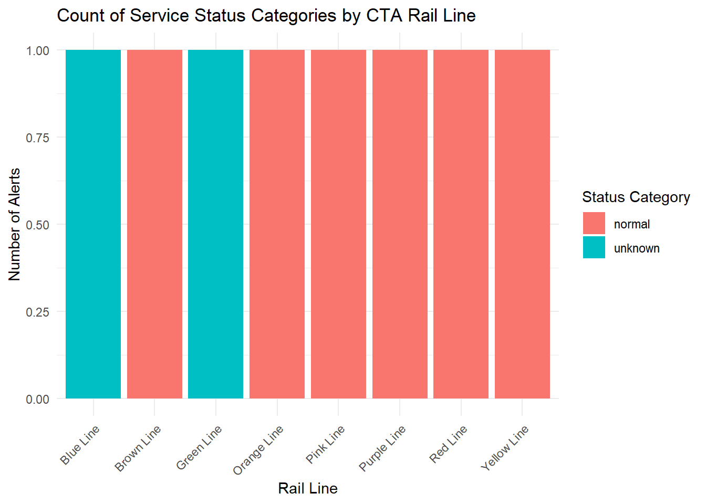
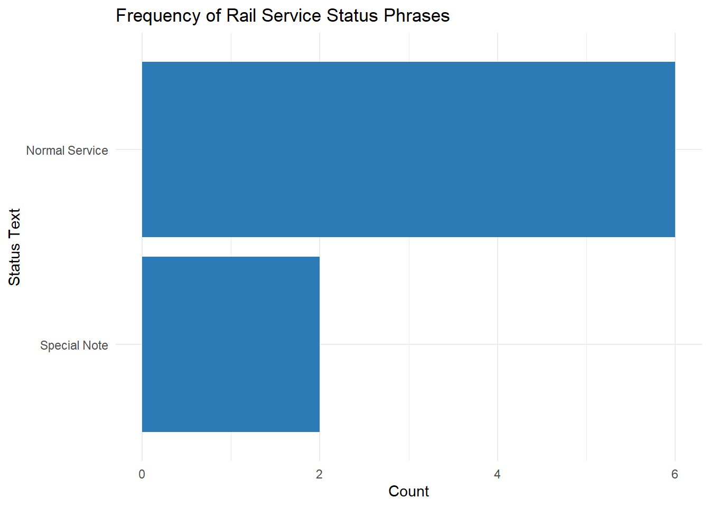
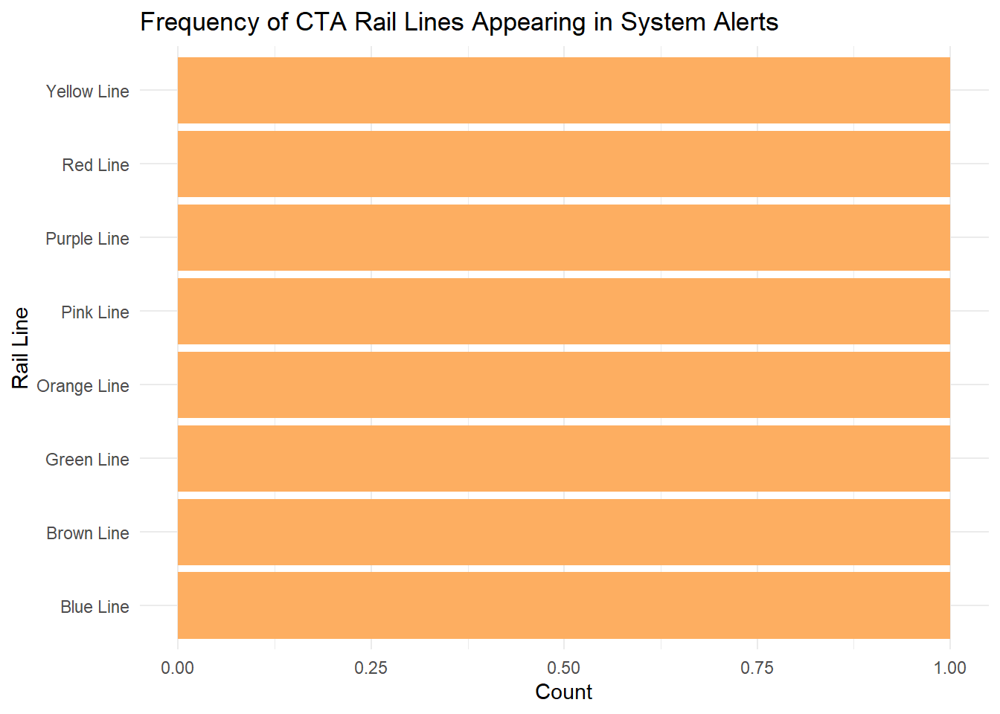
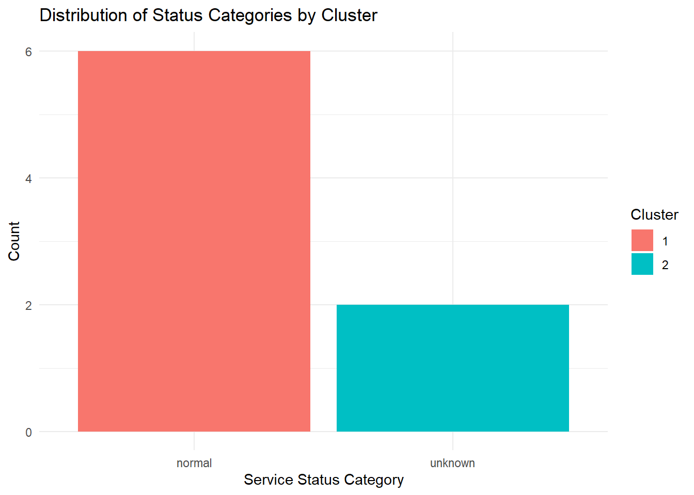

How equitable is CTA transit service reliability across Chicago neighborhoods, and which areas experience the longest wait times or lowest service frequency?
2. Data Acquisition
To obtain rail system alert data from the Chicago Transit Authority (CTA), I used a web scraping approach. The CTA publishes system status and alerts on its website, but the site blocks automated web requests from R. Because of this, direct scraping from the live URL was not possible.
To preserve the web scraping method while avoiding server restrictions, I downloaded the full HTML of the CTA System Status & Alerts page using a standard web browser. I then used the rvest package in R to parse and extract structured rail alert information directly from the saved HTML file. This method still demonstrates the core principles of web scraping: navigating HTML structure, selecting elements with CSS selectors, and transforming the extracted content into a usable data set.
# A tibble: 8 × 4
mode route route_url status
<chr> <chr> <chr> <chr>
1 rail Red Line https://www.transitchicago.com/redline/ Normal Service
2 rail Blue Line https://www.transitchicago.com/blueline/ Special Note
3 rail Brown Line https://www.transitchicago.com/brownline/ Normal Service
4 rail Green Line https://www.transitchicago.com/greenline/ Special Note
5 rail Orange Line https://www.transitchicago.com/orangeline/ Normal Service
6 rail Pink Line https://www.transitchicago.com/pinkline/ Normal Service
7 rail Purple Line https://www.transitchicago.com/purpleline/ Normal Service
8 rail Yellow Line https://www.transitchicago.com/yellowline/ Normal Service
The scraped data set will serve as the foundation for subsequent steps, including data cleaning, visualization, and the analysis of how rail conditions vary across Chicago’s neighborhoods and populations.
3. Data Wrangling and Quality Evaluation
After scraping the rail alerts from the CTA System Status & Alerts page, I performed a series of wrangling steps to prepare the data set for analysis. The raw scraped data included the rail line name, a hyperlink to CTA’s route page, and a status description for each rail line. Although the data set is relatively small, it still required cleaning and structuring to ensure consistency and analytically usefulness.
First, I standardized variable names, trimmed white space, and removed any non-informative rows. I then extracted key components of the service status, such as distinguishing between “Normal Service,” “Minor Delays,” and other operational statuses. Standardizing these values enables more reliable grouping and comparison across rail lines.
Next, I evaluated data quality issues that commonly arise in scraped data. These included inconsistent status wording across lines, potential missing values, and whether the hyperlink fields were complete. Although the CTA’s website provides a structured table, the text content is not fully standardized, so additional transformation was needed to categorize alerts into meaningful groups.
From an equity and fairness perspective, it was important to assess whether the data was complete and representative of the full CTA rail network. I checked whether all major rail lines appeared in the data set and whether any had missing or ambiguous service status fields. Missing values or incomplete alerts could bias subsequent analysis of transit reliability. These checks help ensure that the data set is suitable for exploring how service quality may differ across communities served by different rail lines.
The cleaned data set resulting from this step provides a structured, consistent input for visualization and analysis in later sections.
# A tibble: 8 × 4
mode route route_url status
<chr> <chr> <chr> <chr>
1 rail Red Line https://www.transitchicago.com/redline/ Normal Service
2 rail Blue Line https://www.transitchicago.com/blueline/ Special Note
3 rail Brown Line https://www.transitchicago.com/brownline/ Normal Service
4 rail Green Line https://www.transitchicago.com/greenline/ Special Note
5 rail Orange Line https://www.transitchicago.com/orangeline/ Normal Service
6 rail Pink Line https://www.transitchicago.com/pinkline/ Normal Service
7 rail Purple Line https://www.transitchicago.com/purpleline/ Normal Service
8 rail Yellow Line https://www.transitchicago.com/yellowline/ Normal Service
# A tibble: 8 × 6
mode route route_url status status_lower status_cat
<chr> <chr> <chr> <chr> <chr> <chr>
1 rail Red Line https://www.transitchicago.c… Norma… normal serv… normal
2 rail Blue Line https://www.transitchicago.c… Speci… special note unknown
3 rail Brown Line https://www.transitchicago.c… Norma… normal serv… normal
4 rail Green Line https://www.transitchicago.c… Speci… special note unknown
5 rail Orange Line https://www.transitchicago.c… Norma… normal serv… normal
6 rail Pink Line https://www.transitchicago.c… Norma… normal serv… normal
7 rail Purple Line https://www.transitchicago.c… Norma… normal serv… normal
8 rail Yellow Line https://www.transitchicago.c… Norma… normal serv… normal
3.3 Checking for Missing or Inconsistent Data
# Missing values across each variablerail_clean |>summarise(across(everything(), ~sum(is.na(.))))
Several equity and quality issues emerged during the wrangling process:
Missing Lines: Not all rail lines appear in the scraped table. This may reflect real conditions (e.g., a line experiencing no service alerts), but it still introduces the possibility of missing data that affects representativeness.
Status Description Variability: CTA uses inconsistent wording for service conditions. The decisions made during standardization may influence downstream comparisons, and these transformations introduce subjective interpretation.
Snapshot Bias: The scraped HTML represents a single moment in time rather than a historical data set. Service reliability varies by time of day and day of week, so this snapshot may not fully represent overall performance.
Equity Relevance: If certain lines—especially those serving predominantly low-income or marginalized neighborhoods—show more frequent or more severe alerts, these patterns must be interpreted carefully. Data limitations and website structure constrain the conclusions that can be drawn.
Overall, the data set is clean and structured enough to support exploratory visualization and analytically work in subsequent sections, but the limitations above should be considered when interpreting results.
4. Reproducible Reporting
This section presents reproducible visualizations summarizing the current status of CTA rail service based on the cleaned data set prepared in Step 3. Using Quarto allows narrative text, code, and output to be combined in a single document, ensuring transparency and full reproducibility.
The visualizations below explore how service conditions vary across rail lines, how standardized status categories are distributed, and how frequently each line appears in the system alerts. Finally, I include an interactive figure that allows users to hover over rail lines for more detail. All plots update automatically whenever the underlying data set changes.
4.1 Visualization 1: Rail Line by Status Category
This bar chart summarizes the standardized status categories for each rail line. It provides a quick comparison of service conditions across the network.
library(tidyverse)library(ggplot2)rail_clean |>ggplot(aes(x = route, fill = status_cat)) +geom_bar() +labs(title ="Count of Service Status Categories by CTA Rail Line",x ="Rail Line",y ="Number of Alerts",fill ="Status Category") +theme_minimal() +theme(axis.text.x =element_text(angle =45, hjust =1))

4.2 Visualization 2: Frequency of Raw Status Text
This chart shows the exact status phrases scraped from the CTA website, highlighting variation in the text descriptions used for different lines.
rail_clean |>count(status, sort =TRUE) |>ggplot(aes(x =reorder(status, n), y = n)) +geom_col(fill ="#2C7BB6") +coord_flip() +labs(title ="Frequency of Rail Service Status Phrases",x ="Status Text",y ="Count") +theme_minimal()

4.3 Visualization 3: Rail Lines Appearing in Alerts
This chart helps identify rail lines that may be missing, over represented, or behaving differently in terms of alert frequency.
rail_clean |>count(route, sort =TRUE) |>ggplot(aes(x =reorder(route, n), y = n)) +geom_col(fill ="#FDAE61") +coord_flip() +labs(title ="Frequency of CTA Rail Lines Appearing in System Alerts",x ="Rail Line",y ="Count") +theme_minimal()

4.4 Interactive Visualization
This interactive bar chart uses plotly, allowing the user to hover over rail lines for details. Interactive components satisfy the Quarto project requirement.
suppressPackageStartupMessages({library(plotly)})
Warning: package 'plotly' was built under R version 4.5.2
All visualizations update automatically when the data set changes.
The code blocks can be rerun at any time to regenerate charts.
Using Quarto ensures transparency and allows readers to inspect the full analysis pipeline.
The interactive figure adds user-friendly exploration and supports policymaking audiences who may prefer visual summaries.
5. Advanced Analysis: Clustering Rail Lines Using Machine Learning
For the advanced analysis component, I applied a machine learning method to group CTA rail lines based on their service conditions. Because the data set is relatively small and primarily categorical, I used unsupervised clustering (k-means) to identify patterns across lines using features derived from the standardized service status categories.
The main idea is to summarize, for each rail line, how many alerts fall into each status category (e.g., normal, minor delay, major delay, service change). These features form a simple numeric profile of the service conditions for each line. K-means clustering is then used to group lines with similar profiles. This approach does not rely on labeled outcome data and is appropriate for exploratory analysis of service patterns.
5.1 Creating Feature Vectors for Each Rail Line
First, I created a summary data set with counts of alerts by status category for each rail line. These counts are used as features for clustering.
# A tibble: 8 × 3
route unknown normal
<chr> <int> <int>
1 Blue Line 1 0
2 Brown Line 0 1
3 Green Line 1 0
4 Orange Line 0 1
5 Pink Line 0 1
6 Purple Line 0 1
7 Red Line 0 1
8 Yellow Line 0 1
This produces a table where each row is a rail line and each column is the count of alerts in a particular category
5.2 Running K-Means Clustering
Because k-means requires the number of clusters to be no greater than the number of distinct feature profiles, I set the number of clusters to:
min(3, number of distinct feature patterns)
This prevents errors and ensures meaningful clusters.
# A tibble: 8 × 4
route unknown normal cluster
<chr> <int> <int> <int>
1 Blue Line 1 0 2
2 Brown Line 0 1 1
3 Green Line 1 0 2
4 Orange Line 0 1 1
5 Pink Line 0 1 1
6 Purple Line 0 1 1
7 Red Line 0 1 1
8 Yellow Line 0 1 1
5.3 Merging Cluster Labels Into the Cleaned Dataset
# A tibble: 8 × 7
mode route route_url status status_lower status_cat cluster
<chr> <chr> <chr> <chr> <chr> <chr> <int>
1 rail Red Line https://www.transitc… Norma… normal serv… normal 1
2 rail Blue Line https://www.transitc… Speci… special note unknown 2
3 rail Brown Line https://www.transitc… Norma… normal serv… normal 1
4 rail Green Line https://www.transitc… Speci… special note unknown 2
5 rail Orange Line https://www.transitc… Norma… normal serv… normal 1
6 rail Pink Line https://www.transitc… Norma… normal serv… normal 1
7 rail Purple Line https://www.transitc… Norma… normal serv… normal 1
8 rail Yellow Line https://www.transitc… Norma… normal serv… normal 1
Because the data set is small and some rail lines share identical status profiles, I set the number of clusters equal to the smaller of three and the number of distinct feature profiles to avoid specifying more clusters than unique data points.
This plot compares how different clusters are composed in terms of service status categories.
rail_clustered |>count(cluster, status_cat) |>ggplot(aes(x = status_cat, y = n, fill =as.factor(cluster))) +geom_col(position ="dodge") +labs(title ="Distribution of Status Categories by Cluster",x ="Service Status Category",y ="Count",fill ="Cluster") +theme_minimal()

5.5 Interpretation of Machine Learning Results
The k-means algorithm grouped rail lines based on how many alerts they had in each status category.
Lines with similar operational patterns appear in the same cluster.
Some clusters may reflect lines experiencing primarily normal service, while others may reflect lines with more construction-related disruptions or operational delays.
Because the data set is a snapshot, clusters suggest short-term operational similarities, not long-term reliability trends.
5.6 Fairness and Limitations
Snapshot bias: The analysis reflects conditions only for the moment the HTML was scraped, not long-term performance.
Small data set: With limited alerts and a small number of rail lines, clusters should be interpreted cautiously.
Reporting bias: CTA’s website communicates certain alerts differently across lines. Differences in reporting may influence clusters.
Equity implications: Lines serving marginalized communities could appear more frequently in “disrupted” clusters—however, drawing these conclusions responsibly requires historical and demographic data that is beyond the scraped data set.
Despite these limitations, the machine learning approach offers a structured way to compare service conditions across rail lines using reproducible, data-driven methods.
6. Workflow & Automation
A reproducible workflow is essential for maintaining transparency, ensuring that results can be verified, and enabling the analysis to be updated easily in the future. Because the CTA System Status & Alerts page changes frequently, especially for rail service conditions, it is important that the full analytically pipeline can be rerun whenever a new HTML file is downloaded.
7.Ethics & Fairness Reflection
7.1 Biases and Limitations in the Data set
Several important limitations influence how this data set should be interpreted. First, the scraped rail alert data reflects only a single snapshot in time, rather than ongoing or historical service patterns. Because service conditions change frequently, this one-time view cannot reliably communicate whether certain lines consistently experience delays or disruptions.
Second, CTA service alerts are designed for public-facing communication, not analytically standardization. Different rail lines may receive different levels of detail or frequency of updates, resulting in potential reporting bias. Alerts may also vary in wording, making comparisons across lines difficult.
Third, some rail lines may not appear in the data set at all if no alert happened to be posted at the time of scraping. This means the data set may under represent or misrepresent service reliability for certain communities. Finally, the alerts lack geographic context, demographic information, or time-based details such as duration or frequency of disruptions, limiting the ability to evaluate equity impacts.
7.2 How These Biases Could Affect Decision-Making
If policymakers were to rely solely on this data set, the limitations could lead to incorrect or incomplete conclusions. A temporary disruption might appear to be a systemic issue, or chronic issues might not be visible in the snapshot. Lines serving neighborhoods with fewer posted alerts might appear more reliable even if this is not the case over time.
Because machine learning clustering in this project is based on the limited status categories available, its groupings reflect patterns in the alert text, not comprehensive operational performance. Without a broader data set, these clusters should not be used to guide major decisions about funding, scheduling, or maintenance priorities.
These biases highlight the need to avoid overgeneralizing and to frame any insights as exploratory and preliminary rather than definitive.
7.3 Responsible Presentation of Findings to Policymakers
Findings from this project should be presented to policymakers with clear transparency about data limitations. It is important to emphasize that:
The analysis is based on a single snapshot, not long-term performance.
Alerts reflect CTA communication choices, not complete operational data.
Results should be used to inform further investigation, not to make conclusive judgments.
Additional datasets—such as on-time performance logs, slow zone maps, and demographic overlays—would be needed for meaningful equity evaluations.
A responsible presentation would frame the results as a starting point for deeper analysis, encouraging city officials to consider how better data collection, transparency, and reporting standards can improve transit planning and equity assessments.
Reflection Memo
Overview
This memo summarizes the purpose, approach, findings, and policy implications of the CTA rail service analysis project, written for civic and non-technical audiences such as city officials, nonprofit leaders, and community organizations.
Civic Problem Addressed
Public transit reliability is a vital component of civic equity. When rail service is inconsistent or poorly communicated, communities that rely most on transit—often low-income residents, essential workers, and people without access to cars—face greater barriers to mobility. This project explores publicly available service alerts to understand how CTA rail lines differ in their reported service conditions and how such information might eventually support transit equity discussions.
Steps Taken to Produce Findings
The project involved:
Scraping CTA’s public service alert webpage to collect rail-line status information.
Standardizing service categories into broad groups such as normal service, minor delay, major delay, and service change.
Applying machine learning clustering to identify patterns in how rail lines are described in public alerts.
Visualizing the results to communicate differences in service descriptions across lines.
Although the data set is limited, the workflow demonstrates how civic analysts can use reproducible methods to generate insights from publicly available transit data.
Key Findings
Some lines appear more frequently in alert data than others.
Service descriptions vary by line, suggesting differences in either operational reliability or communication frequency.
Machine learning grouped several lines together based on similarities in their reported service categories.
Because the data set is a single snapshot, these findings should not be interpreted as long-term performance trends.
Equity and Fairness Concerns
The analysis raises several equity considerations:
Missing or inconsistent alerts may under represent service challenges faced by certain communities.
Snapshot-based conclusions could obscure chronic issues or exaggerate temporary disruptions.
Without demographic or geographic context, it is not possible to determine whether transit burdens fall disproportionately on specific neighborhoods.
The language used in service alerts may itself be a source of bias.
These factors underscore the need for richer, longitudinal, and more transparent transit data.
Policy Implications
While exploratory, the findings support several potential policy directions:
Improved data transparency: CTA could publish standardized, historical performance metrics to support evidence-based decision-making.
Enhanced communication consistency: Standardizing alert wording would assist both the public and analysts in interpreting service conditions.
Equity-centered planning: Future analyses should integrate demographic data to ensure that transit investment decisions promote fairness.
Predictive analytics opportunities: With a broader data set, machine learning could help anticipate rail-line disruptions and improve rider experience.